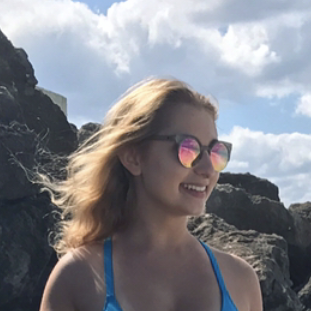

STORYTELLING: WHAT I LEARNED IN MY SCENIC DESIGN CLASS
May 4, 2018
At my school, we are required to take "cognates" or groups of classes in 3 areas of knowledge: arts & humanities, people & society, and STEM. For my art & humanities requirement, I chose theater, because in high school I did makeup for the school play and loved it. Scenic Design was my first class in this cognate, and it was not what I was expecting, but it ended up being a great experience
The class was divided into 3 sections: costumes, lighting, and scenic design. For every section we had a test and a project portion, and at the end we had to write a scenic design analysis paper based on the school play. For a cognate class, this seemed like a lot of work... and it was. But what I didn't realize at first was how valuable it is to be able to think like a storyteller
For the project portion of the class, we had to design costumes and a set based on a fable of our choice. First we had to do visual research by compiling images that conveyed the mood and time period of our story. Then we had to make our designs based on that research and explain how our design choices related to the story we were trying to tell. The key was connecting design choices and visual elements to conceptual, abstract ideas. For example, “The balanced arrangement of bright pink color cherry blossom trees in the garden scene represented the stable yet beautiful nature of the Campbell’s family unit” or “The distorted shape of the size of the living room walls reinforced the psychological view of the main character, and the oppression she felt in her marriage.” We also had to make sure it reflected our research to make sure we weren’t getting distracted and straying from our vision.
It was pretty hard at first, but being forced to make those connections changed the way I think about design and my decision making skills in general. In my communication classes and my work with Orange Umbrella, I have had to do a lot of advertising campaigns, so being able to analyze and explain why a logo, website, or advertisement works well and tells a company’s story is really helpful. Even though it was a lot of work, practicing this skill and applying it in different ways (on the test, project, and paper) was necessary for me to learn and think in a new way. Now, even when I am making small, every day decisions, I think more critically about how they shape my own story, and if it matches my goals and visions for the future.
The moral of the story is, try to embrace new challenges because they can help you in unexpected ways.
ABOUT ME:
I've got my head in the clouds... {read more}
DAILY MEME:

CONTACT ME:
Josie11486@yahoo.com